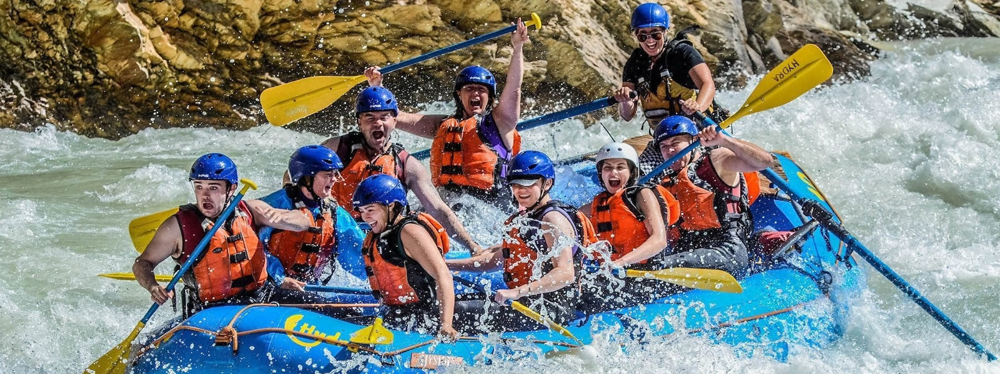

Rates/Dates

Prices and Dates for our 2016 Season GRAND CANYON THREE-NIGHT TRIP: 2016 Pricing and Dates Grand Canyon 3 night trips: $1,475 April 30 May 13, 20, 27, 30 June 3, 10, 17, 24, 28 July 1, 8, 15, 22, 29 August 5, 12, 19, 26 September 9, 17 GRAND CANYON SIX-NIGHT TRIP: (The dates listed will be the date that you spend the night in Marble Canyon. The launch date is the following day.) 2016 Pricing and Dates Grand Canyon 6 night trips: $2,550 April 25 May 8, 15, 22, 25, 29 June 5, 12, 19, 23, 26 July 3, 10, 17, 24, 31 August 7, 14, 21 September 4, 12 Salmon River 5 night trip (The dates listed will be the date that you spend the night in Salmon. The launch date is the following day.) 2016 Pricing and Dates Regular Rate: $1,540 Trip Dates June 3, 10, 17, 24 July 2 Desolation 6 night Trip 2016 Pricing and Dates Regular Rate: $1,790 Trip Dates July 10, 18, 26 Aug 3, 11, 19, 27 Sept 4

More Than Just The Thrill
Enjoy the breathtaking scenery. From valleys, meadows, canyons, and high peaks; it's way more than just the rapids. It's a great way to get away from it all and relax amongst all the beauty of the great outdoors.
Join UsRates/Dates wireframe
Details about Rates/Dates or Page2 wireframe